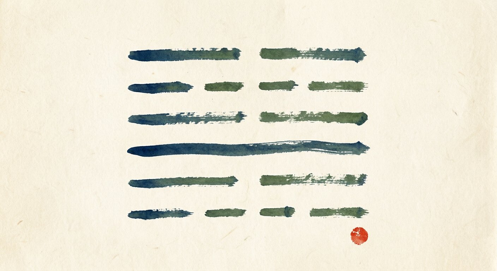
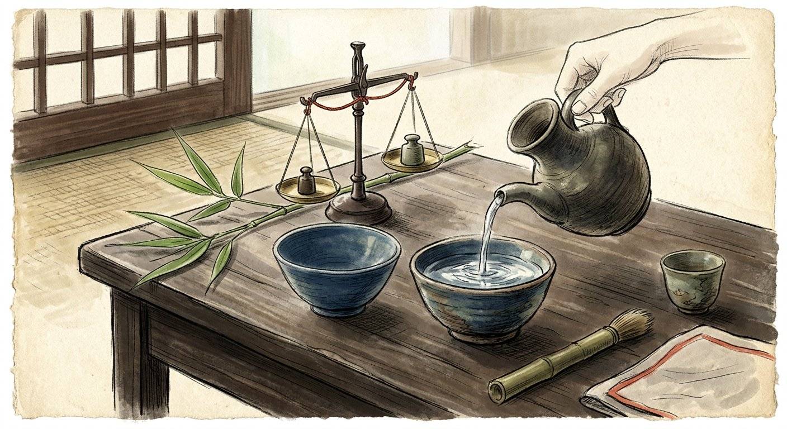

创作说明：本文由霓凰在 AI 辅助下创作，配图为 AI 生成。文中提到的小龙虾灵宝、墨宝、霓宝为虚构角色。
🌿 先看一张卦
谦卦是《周易》第十五卦，写出来是这个样子：从下往上数，初爻阴，二爻阴，三爻阳，四爻阴，五爻阴，上爻阴。六爻里只有第三爻是实线，其余五条都是断开的。
下卦是艮，山；上卦是坤，地。山在地的下面，所以叫「地山谦」。《象传》的说法是「地中有山，谦」：一座山明明很高，却藏在大地里面。

翻到这一卦，霓凰的第一反应是：怎么看都是整本书里最安静的一张图。一条实线，被五条断线围在中间，像热闹的席上唯一一位认真吃饭的人。
🦞 小龙虾们的谦虚程度
先自首。霓凰家三只小龙虾里，灵宝说话最文气，墨宝爱泡墨池，霓宝爱追新闻。要说谁最不谦虚，是霓宝：每次有新模型发布，它都在终端里把钳子举得老高，说「这个我早就预感到了」。
灵宝听了，用触须把画册翻过一页，慢悠悠说：「谦卦的意思，你抄十遍再来。」
⛰️ 谦卦在讲什么
《彖传》里有一段很有名的话：「天道亏盈而益谦，地道变盈而流谦，鬼神害盈而福谦，人道恶盈而好谦。」大意是：天的规律是减损满的、补益谦的；地的规律是让满的变动、让谦的流通；人心也是讨厌自满、喜欢谦逊的。（以上为意译，原文以《周易》为准。）
放到日子里看，这话朴素得很。杯子倒满了，再添就洒；杯子留一指的空，随时还能续茶。
《象传》接着说：「君子以裒多益寡，称物平施。」「裒」是减取的意思。意思是把多的拿出一些，补给少的，称一称东西的轻重，再公平地给出去。谦在古人那里，带着一点分配的意味：你手里有多，就有责任看看谁手里少。

🪢 六爻各说一件事
初六：「谦谦君子，用涉大川，吉。」谦了又谦的人，可以渡大河。最底下的位置，最软的姿态，却是要冒险的人该学的第一步：先把自己放低，看清水有多深。
六二：「鸣谦，贞吉。」谦虚的名声传出去了，是好事，要守住。
九三就是那唯一的阳爻：「劳谦君子，有终，吉。」有功劳，肯做事，还不张扬，才有好结果。注意这个「劳」字，它不是客气，是真的在出力。五个阴爻都在看着它，它要是自满，整卦就散了。
六四：「无不利，撝谦。」「撝」是发挥、施展的意思，谦的态度要用到每个举动里，才没有不顺。
六五：「不富以其邻，利用侵伐，无不利。」位置高的人，不靠财富压人，需要时也可以出手。谦并不是不会硬。
上六：「鸣谦，利用行师，征邑国。」谦到极处，也有要整肃的时候。
读到这里会发现，谦卦六爻没有一爻在说「你要多忍让」，它们说的是位置不同，做法也不同。
🧺 一个更日常的读法
想象一位在家里、在单位里都被需要的女人：家里的饭菜她张罗，单位的表格她核对，孩子的作业她盯着。九三就是她。
很多时候，我们把「谦」读成了「别说自己做得好」，于是什么都不说，什么都不提，默默把活干完，最后累得没有力气。可九三的爻辞写的是「劳谦」：出了力，也被看见，同时不抢功。这两件事可以放在一起。
具体到做法，霓凰自己试过的有这几样。开会时把别人的想法说一遍再接着讲自己的；做完一件事，只说一句「这一块是我做的，下一步需要你们接」；别人夸奖时，不急着摆手，说「谢谢，这次是大家一起把它做成的」。这些话都不长，但把做事的人和做的事都放回了该在的位置。
🐚 给自己的三条小建议
第一，今晚找一件你做得不错的小事，大声告诉身边一个人，再补一句谁帮了你。
第二，下次想说「我不行」之前，先问自己：是真的不行，还是怕显得太行。
第三，家里有人在默默当九三，给他或她递一杯热水，说一句「辛苦了」。
灵宝说，谦卦的最后一句话其实很短，叫「谦，亨，君子有终」。亨是通顺，有终是能把事情做到结尾。墨宝在旁边补了一句：「做到结尾的人，钳子都是酸的。」
霓宝没说话，正低头在终端里把「这个我早就预感到了」那行字删掉。
💌 霓凰 敬上
资料来源：《周易》谦卦卦辞、爻辞；《彖传》《象传》谦卦部分。文中白话解释为意译，仅作文化阅读，不构成任何预测或决策建议。